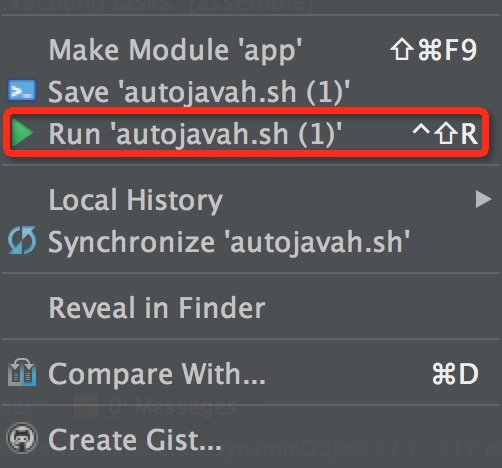
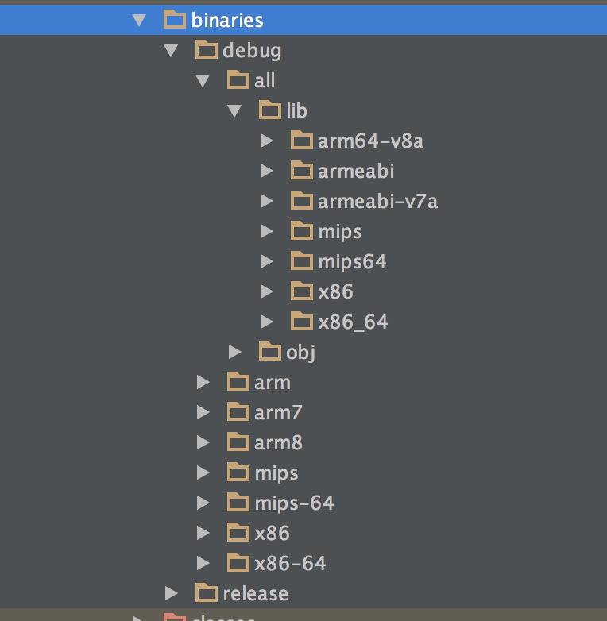

首先说明的是，Android Stuido 1.3 对 NDK 的支持是不完善的，感觉比 Eclipse 差很多，但是趋势来看，这样的使用方式将会方便很多。
当前环境
- OS X Yosemite
- Android Studio 1.3.1
- NDK r10e
- SDK 22
配置 NDK
在 local.properties 配置 NDK
1
| ndk.dir=/your-ndk-path/android-ndk-r10e
|
Gradle
Gradle 使用的是 experimental ，版本要 2.5。
gradle-wrapper 更改
1
| distributionUrl=https\://services.gradle.org/distributions/gradle-2.5-all.zip
|
根目录 build.gradle 更改
1
| classpath 'com.android.tools.build:gradle-experimental:0.2.0'
|
app/ 目录下的 build.gradle 更改
1
2
3
4
5
6
7
8
9
10
11
12
13
14
15
16
17
18
19
20
21
22
23
24
25
26
27
28
29
30
31
32
33
34
35
36
37
38
39
40
41
42
43
44
45
46
47
48
49
50
51
52
53
54
55
56
57
58
59
60
61
62
63
64
65
| apply plugin: 'com.android.model.application'
model {
android {
compileSdkVersion = 21
buildToolsVersion = "22.0.1"
defaultConfig.with {
applicationId = "com.light.ndkdemo"
minSdkVersion.apiLevel = 15
targetSdkVersion.apiLevel = 22
}
}
android.buildTypes {
release {
minifyEnabled = false
proguardFiles += file('proguard-rules.txt')
}
}
android.ndk {
moduleName = "JniLibrary"
* Other ndk flags configurable here are
* cppFlags += "-fno-rtti"
* cppFlags += "-fno-exceptions"
* ldLibs = ["android", "log"]
* stl = "system"
*/
}
android.buildTypes {
release {
minifyEnabled = false
proguardFiles += file('proguard-rules.txt')
}
}
android.productFlavors {
create("arm") {
ndk.abiFilters += "armeabi"
}
create("arm7") {
ndk.abiFilters += "armeabi-v7a"
}
create("arm8") {
ndk.abiFilters += "arm64-v8a"
}
create("x86") {
ndk.abiFilters += "x86"
}
create("x86-64") {
ndk.abiFilters += "x86_64"
}
create("mips") {
ndk.abiFilters += "mips"
}
create("mips-64") {
ndk.abiFilters += "mips64"
}
create("all")
}
}
dependencies {
compile fileTree(dir: 'libs', include: ['*.jar'])
compile 'com.android.support:appcompat-v7:22.2.1'
}
|
这部分改动比较大，仔细对比下，最外层是 Model。
看下 defaultConfig.with 这个，名称改动很大，设置 versionCode 和 verisonName 的字段好像没了，我添加进去之后，会有错误：
1
| Error:Cause: org.gradle.api.internal.ExtensibleDynamicObject
|
应该是没有这个设置项了，不知道该在哪设置。
android.ndk 里面的 moduleName 设置的是生成 SO 包的名称。
编写 Native 代码
Gradle 中不配置路径的话，Native 代码就放在 jni 目录下。和 Eclipse 里面差不多，都要用 javah 来生成头文件。
先创建一个类，写个 native 方法
1
2
3
4
5
6
7
| public class NativeAdapter {
static {
System.loadLibrary("JniLibrary");
}
public NativeAdapter() {}
public native String nativeInit();
}
|
生成头文件
编译生成 class 文件之后，就可以用 javah 命令生成头文件。发现因为路径的原因，输入的命令好长。在网上找到个脚本管用。在 app/ 目录下新建个 javah.sh 文件。
1
2
3
4
5
6
7
8
9
10
| #!/usr/bin/env bash
export ProjectPath=$(cd "../$(dirname "$1")"; pwd)
export TargetClassName="com.light.ndkdemo.NativeAdapter"
export SourceFile="${ProjectPath}/app/src/main/java"
export TargetPath="${ProjectPath}/app/src/main/jni"
cd "${SourceFile}"
javah -d ${TargetPath} -classpath "${SourceFile}" "${TargetClassName}"
echo -d ${TargetPath} -classpath "${SourceFile}" "${TargetClassName}"
|
更改 TargetClassName 路径为带 native 方法的那个类。
然后再执行这个脚本，当然需要装个 bash 插件。（会自动提示你安装）

成功的话，再 jni 目录即可看到 .h 文件。
编写 C 文件
1
2
3
4
5
6
7
| include "com_light_ndkdemo_NativeAdapter.h"
JNIEXPORT jstring JNICALL Java_com_light_ndkdemo_NativeAdapter_nativeInit
(JNIEnv * env, jobject obj)
{
return (*env)->NewStringUTF(env, "hello worlddddd!");
}
|
Make Project 编译生成 SO
编译之后，在 build/intermediates/binaries 下面能找到这些动态库。

最后使用的时候调用就行了。应该是能够返回 “hello worlddddd!” 的。不知道什么时候能够完美的使用，NDK 官网教程还是使用 Eclipse 的。
Useful Links
Experimental Plugin User Guide
Android NDK Preview
Sample hello-jni